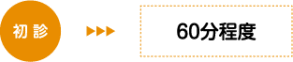
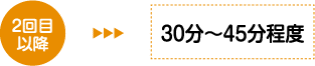

鍼灸、整骨、接骨、美容鍼灸、マッサージ、整体、カイロプラクティック、O脚矯正、不妊、エステでお困りの方はTeaching Beauty鍼灸マッサージ整骨院へ。
電話でのご予約・お問い合わせはTEL.03-6413-7803
〒154-0014 東京都世田谷区新町3-21-1さくらウェルガーデン301号室
花粉症施術pollinosis therapy
花粉症と認めたくないのはわかりますが今年から発症の方が多い
花粉症？風邪？その初期症状はよく似ていると言われています。
「もしや？ついに私も花粉症に！？」と、風邪なのか花粉症発症なのか区別がつかず、対処に迷うことがあります。 「鼻水」「鼻づまり」「くしゃみ」ですが、これらの特徴は、風邪の初期症状と全く同じです。ここで大事なことは、これらの症状が出たらまず本当に花粉症なのかを知ること。 初期症状が風邪に似ていることから、対策が遅くなり、重症化するケースもあるようです。 花粉症だと気づかずに対策が遅れてしまうことがあります。
今までに他のアレルギーの病気を持っていた人は花粉症になりやすく、毎年大量の花紛に接していると、ある日花粉症の症状があらわれます。
花粉症に表れる症状を抑えておきましょう。
①くしゃみ
花粉症のくしゃみは、何回も続けて出るのが特徴です。 立て続けに何回も出る。風邪では、あまり立て続けには出ない。 花粉症の症状では７～８回以上続く時もありますし、花粉の飛散しなくなる時期まで続きます。 酷い時は一日中止まらない場合も。
②鼻水
花粉症の鼻水は、無色透明の水性でサラサラしているのが特徴です。 透明でさらさらしている。 風邪では、初めはさらさらでも、
数日で黄色くなってネバネバしてくる。 いくら鼻をかんでも出てきます。
この状態が、花粉が飛散している間続く。
顔が地面に対して垂直であると鼻の穴から口まで、簡単に流れてしまうことも少なくありません。
③鼻づまり
花粉症の症状の中で最もつらく感じると言われているのが鼻づまりです。 さらさらとした流れるような鼻水が止まらなかったり、頑固な鼻づまりに悩まされる。
酷い時には、両穴が詰まることも多く鼻で呼吸が出来なくなくなるくらい詰まってしまいます。 いくら鼻をかんでも、かめないほど詰まっていたり、鼻の通りが一時的に改善しても、また直ぐに詰まるといった、繰り返しで、風邪の鼻づまりと比較して、酷い詰まり方になるケースが多い。
④目のかゆみ
風邪の症状にはあまり見られないのが「目のかゆみ」です。かゆみ自体も酷いですが、目をこすると結膜や角膜を傷つけてしまうことに症状が悪化するケースがあるので注意が必要です。
目に直接花粉が付着して起きます。付着してしまった花粉を外に出そうとして、体の免疫機能が過剰に働きアレルギー反応が起こり、涙が出やすくなったり、酷いかゆみが起こります。
充血したり、涙が出る、目に異物感があるなどの症状も。 花粉症の場合は目のかゆみがまぶたやまぶたの縁などになります。
花粉症だけど薬は飲みたくない
薬を飲むのもいいけれど、飲み続けるのは嫌だし、副作用も心配ですよね。そんな悩みを抱える方に、朗報があります。 ”鍼灸治療”が、花粉症に効果があるとして、近年注目を集めているのです。 そこで今回は、英語圏の情報サイト『Acupuncture for Health』『TIME』を参考に、鍼治療がどのように花粉症に効果的なのか、お伝ええします。
【鍼灸治療を組み合わせると効果大】
アレルギー患者の鍼治療に関して、米国内科学会では422人の花粉アレルギーとアレルギー性鼻炎を持つ患者を対象に、患者を次の3つのグループに分けて2ヶ月にわたり実験を行いました。
グループ1：鍼治療を12回行い、必要に応じて抗ヒスタミン剤を投与。
グループ2：偽の鍼を使った鍼治療を12回行い、必要に応じて抗ヒスタミン剤を投与。
グループ3：鍼治療は行わずに、必要に応じて抗ヒスタミン剤を投与。
その結果は
グループ1：ほかの2つのグループに比べて、大きな回復が見られた。
グループ2：多少の回復が見られた。
グループ3：治療前と同じ。
上記の結果からすると、鍼治療がアレルギーに少なからず効き目があったと読み取れます。
鍼治療を推奨している医師も
では、実際に現場で治療に当たっている、医師は”花粉症における鍼灸治療の効果”をどのように考えているのでしょうか？ 医師のケイト・パイトロスキーさんによれば、鍼灸治療を行った患者さんのほとんどが、ある程度、またはかなりの回復を見せているといいます。また、上記の米国内科学会の実験で、”偽の鍼”を使った鍼治療を行った患者にも多少の回復が見られた結果について、 「偽の鍼でも鍼がツボを押さえているので、多少は効果があったのでは」と見ています。 また、ベルリンのシャリテ大学医療センターのベノー・ブリンカウス医師は、従来の薬に満足していない、副作用に悩んでいる、といった患者には、安全性の高い鍼の治療を奨めている、といっています。
当サロンでは長年花粉症に悩まされいる患者様が鍼灸治療をしてから、ほとんど薬を飲まなくても花粉症の症状が治まっているという方が沢山おられます。
患者様により治療効果には差が見られますが、アレルギーは早めの治療に踏み切ることにより、今年の症状を抑え、また、来年以降に症状が出にくくなります。
皆様も花粉症の薬による副作用など、悩みを抱えているようでしたら、試して見てはいかがでしょうか？
施術にかかる時間
症状により異なりますが、施術時間は下記を目安として下さい。  
初診は問診表の記入や初回検査、しっかり丁寧な問診を行いますので多めにかかります。
場合により上記の目安時間より長くかかることもありますので、お時間には余裕を持って
ご予約下さい。
花粉症治療料金
| １回 | \45,000(税別) |
|---|---|
※症状が出る前からの受診をお勧めしますが、症状が出てからでも遅くありません。
⇒動画『1日3分で花粉症を治す方法』
TeachingBeauty鍼灸整骨院
〒154-0014東京都世田谷区新町3-21-1
さくらウェルガーデン3F
TEL：
03-6413-7803
→アクセス
診療時間
【通常診療】
月火金土
午前：09:00～13:00
午後：15:00～19:00
木曜日
午前：休診
午後：15:00～19:00
※当日予約可
休診日
水、木(午前)、日、祭日
夜間診療
月火木金土／19:00～21:00
※通常価格の1.5倍料金
※当日の19時までにご予約の場合のみ
※往診の場合も19時までにご予約下さい
早朝診療
月火木金土／07:00～09:00
※通常価格の2倍料金
※前日の19時までにご予約の場合のみ
交通事故・労災・
各種保険取扱い